Free to forkNo licence and no copyright claim: build this game under your own name, or lift one idea from it. Why?
Game overview
Antigrav Deconstruction is a brick breaker in the family of Arkanoid and Breakout, played as a calm demolition job. A derelict space station hangs in the middle of a chamber, built from colored bricks, and every brick you break bursts into falling-sand pixels: dust and liquids that pour down into a tray, gases and stranger matter that float up into another.
The pixels touch, mix and react, turning into other materials, settling peacefully, or pushing each other away. Each station's materials are different, so each chamber fills with its own little chemistry set.
The ball is tethered to your ship and can't be lost. There are no timers, no hazards and nothing to fail. Smash the station into resources, and they're built into a brand-new starship that leaves for service.
Target audience
Players who like to unwind with something satisfying to break and pretty to watch: the people who leave a sand simulator running, or play brick breakers for the crunch rather than the challenge.
They want to make a satisfying mess at their own pace, with nothing chasing them.
It's played with the mouse alone, and nothing in it asks for speed.
Game's purpose
Rest and ease: a relaxing, almost meditative kind of destruction.
Play and beauty: watching dust, liquid and gas pour out, mix and react, slightly differently every time.
Creation: each smashed station turns into a new ship, a small gift to the civilization that asked for it.
It avoids draining safety and rest on purpose: the ball can't be lost, nothing hurts you, and no clock runs.
Core concept
Brick breakers are built on the fear of losing the ball: one miss and the life is gone.
Here the ball is on a tether, you can fly anywhere, and the bricks don't vanish, they turn into material that keeps behaving after it's broken.
The fun moves from not failing to watching what happens: the brick breaker becomes a toy box of falling-sand chemistry.
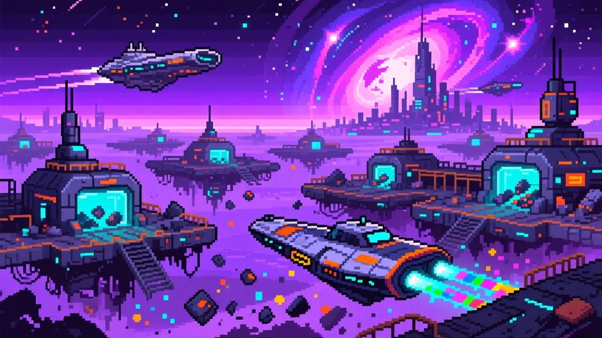
"Every station taken apart becomes a new ship, built pixel by pixel and sent out into service."
Lore and story
The derelicts
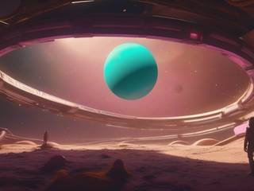
A spacefaring civilization leaves its old stations behind: outdated, abandoned, drifting in orbits nobody uses any more. They're full of perfectly good matter, locked up in obsolete shapes.
The chamber
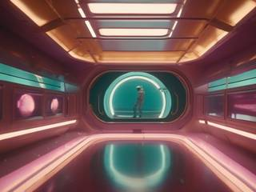
A derelict is towed into a demolition chamber, where selective gravity rays from above and below do something clever: they hold the station still in the middle, pull loose solids and liquids down into a tray at the bottom and lift gases and buoyant matter into a tray at the top, while leaving your little demolition ship free to fly as if in open space.
Your ship carries a wrecking ball on an electromagnetic tether, and your job is to turn the station into neat trays of raw material.
The shipyard
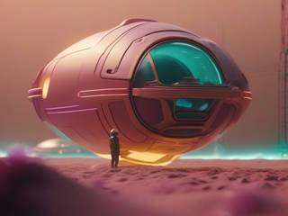
When a station is gone, its materials go straight to the yard, and a new starship is built from them pixel by pixel and sent out to wherever the civilization needs it: a passenger liner, a hauler, a patrol ship, a research vessel or a pleasure yacht.
Controls and interface
Everything is on the mouse. Your ship accelerates toward the pointer and stops on whichever axis is blocked by a brick or the chamber wall. Pixels never collide with it, so you can fly straight through the dust.
Fly and swing
Mouse
The ship flies toward the pointer
Left button
Launch the ball upward, or pull it back on the tether
Play
Wheel
Switch the ball's element, with a second of slow motion
Right button
Gravity field: gather loose pixels around the ship
Each flick of the wheel drops the game to a fifth of its speed for one second, so you can change element mid-swing and see the hit happen. Flicking again only restarts that second; it never stacks.
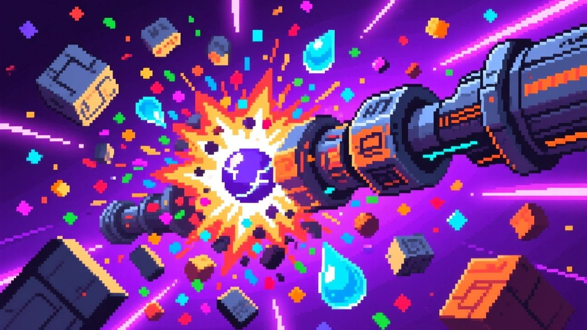
"A brick hit with the element it's sensitive to explodes, and the faster the ball, the bigger the blast."
Game layers
01 · Moment-to-moment
Swing, smash, watch
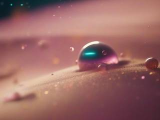
Launch the ball, bump it with the ship to send it flying, let it bounce off the chamber walls into the station, and reel it back in when you want it. Pick the element that suits the bricks in front of you and swing harder for a bigger blast.
Then watch: a burst of dust pours into the bottom tray, a puff of gas floats to the top, a liquid meets a powder and turns into something else.
02 · Low metagame
One station
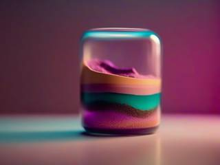
A stage is one generated station with its own set of materials. It ends when the last brick is gone and the trays hold everything it was made of.
Its finish is the shipyard: the station's matter is built, pixel by pixel, into a new starship.
03 · High metagame
The fleet you built
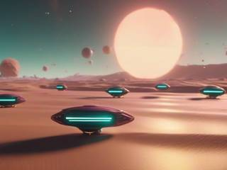
There's always another derelict to tow in, and every ship you've built joins a fleet gallery: a growing record of everything those old stations became, sorted by what each ship was built for.
Each ship is also saved as a PNG image with a transparent background, so the fleet lives outside the game too, ready to be shared or used anywhere.
04 · Practical game flow
A station with your coffee
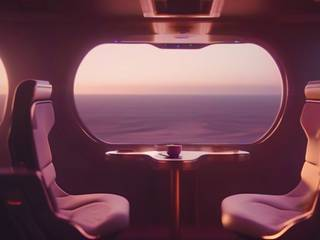
One station takes a few minutes to a quarter of an hour, depending on how long you like to play with the pixels. Do one and stop, or keep towing them in.
A half-smashed station can be left and picked up later, and since nothing in the chamber happens without you, nothing changes while you're away.
Game modes
There's one mode, and that's the point: tow in a station, take it apart, launch the ship it becomes. No difficulty settings are needed, because there's nothing to lose. A few stations come with a twist the generator rolls, such as every brick being sensitive to the same element, so they all go up in a satisfying run of explosions.
Features and mechanics
The heart of it
Bricks that become matter
Each brick holds a material, and breaking it releases a burst of falling-sand pixels: cellular automata, where every pixel follows simple rules about the pixels around it. Each station uses six random materials, two solids, two liquids and two gases, each with its own color as a brick and as pixels.
Then they meet. Depending on the station, two materials might settle peacefully side by side, one might absorb the other, they might turn into something new, or push each other forcefully apart. Every station also hides up to three more materials that only exist as the product of a reaction. Some stations never produce them, some produce one or two, so part of the joy is finding out what this station's chemistry does.
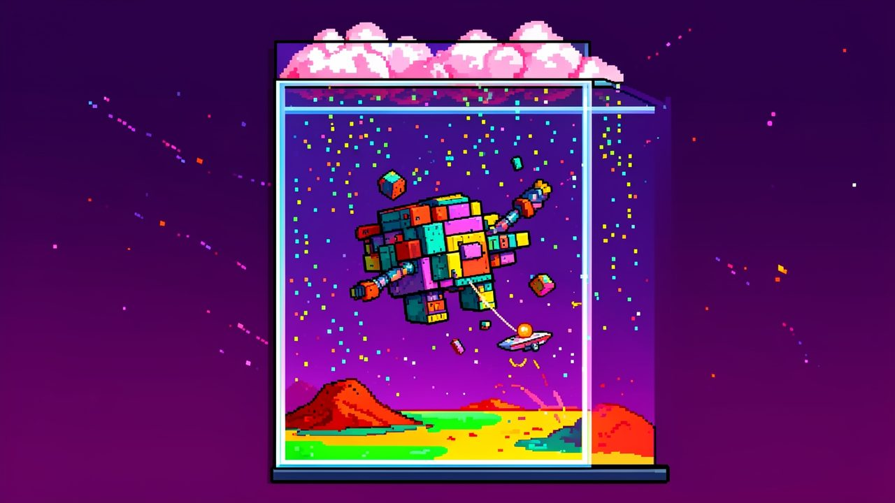
"Solids and liquids fall into the tray below; gases and buoyant matter rise into the tray above."
You can't lose it
The tethered ball
The ball is joined to your ship by an electromagnetic tether. Release it softly, bump it with the ship to give it momentum, let it fly, and pull it back with the tether whenever you like. It bounces off the chamber's top and side walls; if it drops past the bottom it slips off-screen for a moment and retracts to the ship on its own.
The ship can fly anywhere in the chamber except through bricks, so you're never stuck on a rail at the bottom. The skill isn't in saving the ball but in aiming the swing: the speed of the hit decides the size of the blast.
Pick the right one
Four elements
The ball can be switched at will between four elements. Each brick color is sensitive to one of them, and which one is random for every station, so the first few hits are a little experiment.
Element
On a sensitive brick
Fire
A burst of flame
Electric
A crackling discharge
Acid
A corrosive splash
Spike-rock
A shattering impact
The right element makes the brick explode, taking its neighbors with it, and the faster the ball was moving, the bigger the explosion. The wrong element still breaks the brick, just without the satisfying bang. Nothing is ever wasted.
Up and down at once
Gravity rays and two trays
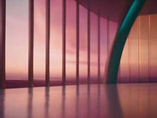
The chamber has two gravities. Rays from below give solids and liquids a planet's worth of weight, so they fall and heap and pool in the bottom tray; rays from above do the same for gases and anti-gravity matter, which rise and collect upside down in the top tray. The station and your ship feel neither.
So a chamber fills from both ends: dunes and puddles below, clouds and upside-down drips above, and reactions wherever the two streams cross on the way.
Just for fun
The gravity field
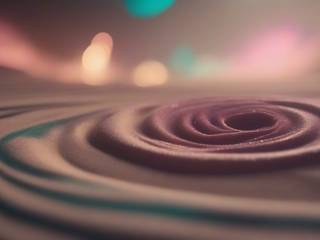
Hold the right button and the ship projects a small circular gravity field that pulls loose pixels toward its center, gently near the middle and harder at the edge. Since the pixels pass through the ship, it gathers them into a swirling cloud you can carry, then let go of to toss them across the chamber.
It does nothing for progress, on purpose. It's there so you can play with the sand.
Never the same twice
Generated stations and ships
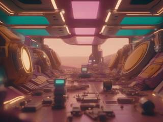
Stations are built procedurally from ordinary bricks, so every one has a different silhouette, a different set of materials and a different chemistry. The ship at the end is generated too: a mirrored, top-down pixel-art starship, shaped by one of five purposes, civilian, industrial, military, research or recreation.
Together they make each stage a small, complete story: an old thing arrives, comes apart into colors, and leaves as something new.